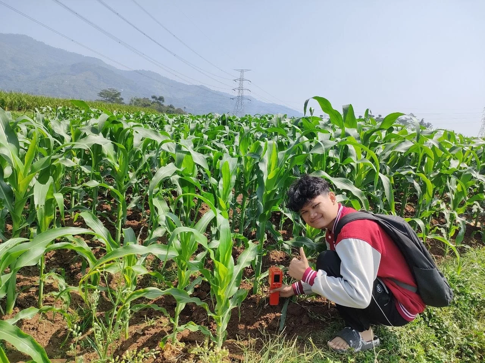

Embedded systems & agriculture · 2024
TOMOT
A portable soil monitoring device that brings pH, moisture, NPK, and temperature readings to the field.

Project purpose
TOMOT was developed as a portable soil monitoring stick to help farmers check parameters relevant to fertilization decisions.
Implementation
The device combines pH, moisture, NPK, and temperature sensors in a stick-shaped form for measurements at the plant site.
Documented outcome
The project was developed from March to November 2024 through PKM-Karya Inovatif. It received a Bronze Medal in the presentation category at PIMNAS 37 in 2024.
